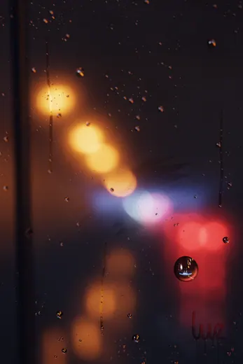
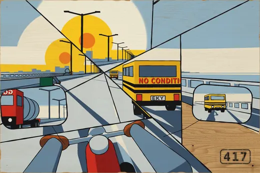
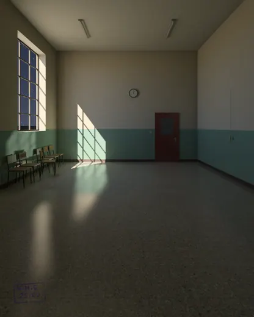
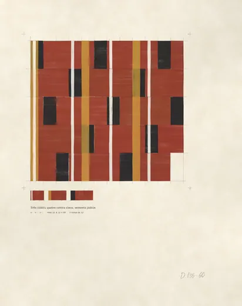
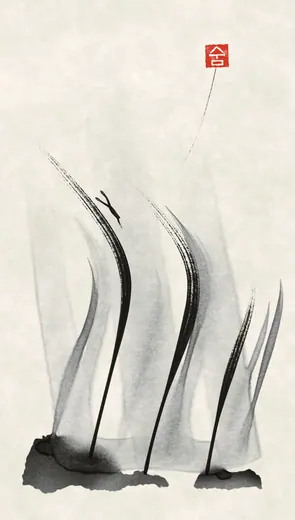
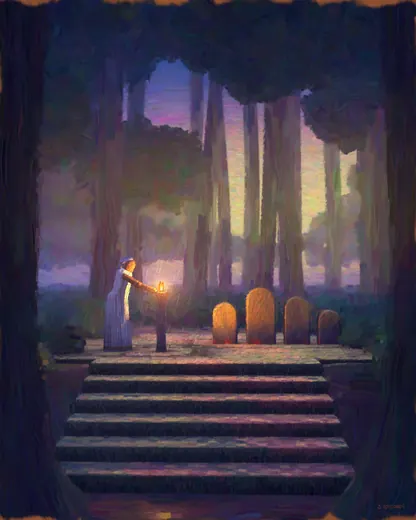

A Year and a Day
Left-luggage hall, lower level
Open after the last train
No. 00000
Admit one, after the last train.
Keep this. It is how we know you came.
You are in the left-luggage hall under the station. The last train has gone, which is when we open. If you came by the stairs at the end of the platform, you may have noticed that they are not usually there.
For twenty-eight years I kept what people left on trains. The rule was a year and a day. A thing sat that long on the shelf with a tag on it, and after that it was no longer yours. I have kept the rule and changed what it is for. Each maker here has a room for a year and a day. Then the work comes down and the room goes to someone else.
I take only one kind of work: pictures whose makers wrote them down. The way of making exists as instructions, and the picture is what the instructions leave. A thing like that can be made again, so it cannot be lost. In all my years at the counter it is the one kind of property I never had on my shelves.
There are six rooms tonight. I have put them in an order. There is a chair in every room.
Mirela Danso, attendant
Tonight's rooms, in the order she hung them
-
1

Luz BautistaThe way home two pictures comes down 12 November 2027 -
2

Tobi AdeyemiFifteen seconds two pictures comes down 12 November 2027 -
3

Halina Mróz QuispeItems declared two pictures comes down 12 November 2027 -
4

Dalva ItōThree counts three pictures comes down 12 November 2027 -
5

Go Sun-deokTwo breaths two pictures comes down 12 November 2027 -
6

IlanjiSix lamps six pictures comes down 11 November 2027 - 7KeptFor what has not been handed in yet